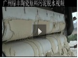
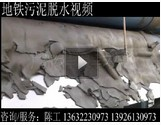

- 污泥泥浆类脱水应用视频
- 洗砂尾泥脱水视频
- 制砂污泥处理视频
- 制砂污泥脱水现场
- 砂石加工尾泥-3米机
- 洗砂加工尾泥
 洗砂污泥脱水现场
洗砂污泥脱水现场- 建筑制砂污泥脱水
- 石英砂污泥脱水处理
- 尾矿铁矿尾泥脱水视频201312
- 酸洗铁矿污泥视频（浙江）2013.09
- 矿山铁矿污泥2011.8
- 铝土矿尾泥脱水2012.3
- 稀土矿污泥2011.12
- 矿山铁矿污泥2011.8
- 铜矿污泥脱水2010.7
- 矿山（铜矿）污泥脱水2007
- 锌矿矿厂污泥脱水2010.7
- 印度煤矿现场2011.11
- 水煤灰污泥脱水处理2011
- 锑矿污泥脱水2011.10
- 陶瓷原料高岭土脱水
- 广东高岭土污泥脱水2011.11
- 陶瓷污泥脱水现场
- 陶瓷原料(钾，钠长石粉）泥浆脱水
- 陶瓷原料硅粉泥浆2011.6
- 陶土原料（长石粉）脱水
- 高岭土-分体式浓缩机脱水效果2012
- 陶瓷厂污泥脱水-进料预脱水段
- 陶瓷厂污泥脱水-御料出泥段
- 打桩污泥2012.7
- 打桩污泥出料段201312
- 河道污泥脱水处理2013.5
- 地铁污泥脱水2011.11
- 铝型材厂污泥脱水视频2011
- 铝氧化污泥脱水2011.11
- 氧化铝污泥--絮凝脱水段2010
- 氧化铝污泥--进料脱水段2010.7
- 皮革污泥脱水视频2011.11
- 造纸纸厂污泥脱水视频2011
- 植物渣浆类脱水应用视频
产品介绍
站内搜索
联系我们
地址: 花都区平步大道中平步工业园
邮编: 510000
联系人: 测试
电话: 020-58888888
传真: 020-58888888
手机: 13888888888
邮箱: netgather@netgather.com

Copyright ©2004-2011 广州绿丰环保机械有限公司www.netgather.com All Rights Reserved.
地址: 花都区平步大道中平步工业园 邮编: 510000 联系人: 周先生
电话: 021-58888888 传真: 020-58888888 手机: 13888888888
邮箱: netgather@netgather.com
地址: 花都区平步大道中平步工业园 邮编: 510000 联系人: 周先生
电话: 021-58888888 传真: 020-58888888 手机: 13888888888
邮箱: netgather@netgather.com